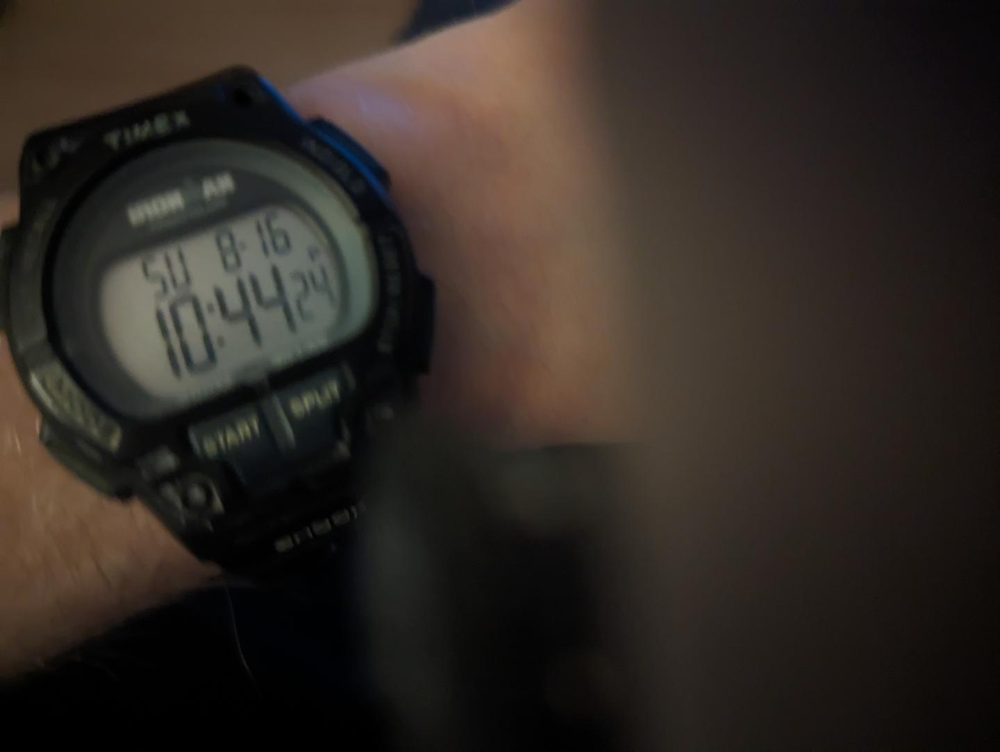
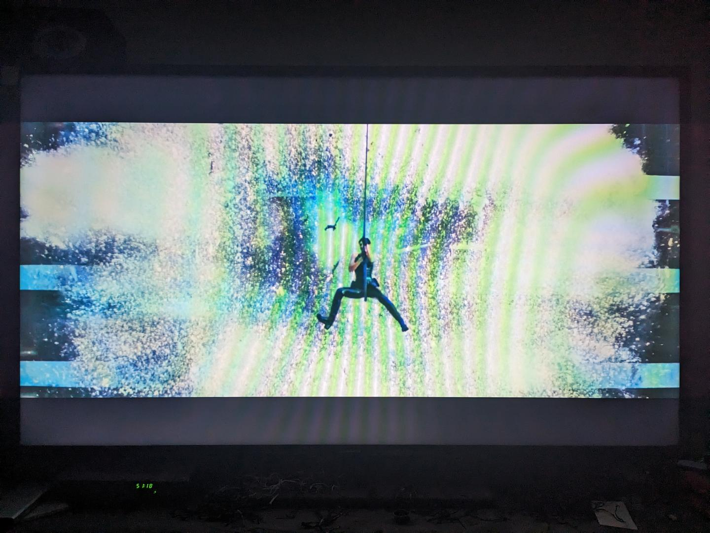

Date: 2026-08-24
After taking a break from watching movies for a while, I decided to watch another one. At first I was not planning to write a journal entry about whatever movie that I picked, so I tried to pick one that I did not think would have any significant metaphors about the subconscious language. After scrolling through the movies on Netflix, I ended up going with Deep Impact. However, it turned out that I was wrong about there being metaphors about the subconscious language. In addition, if we are living in a deterministic computer simulation of reality in which all events are predetermined, it seems like whoever made the simulation wanted to force me to write another journal entry.
The first moment that I realized that I would have to write a journal entry was when I was watching the movie and they referenced the date August 16. By coincidence, the date that I was watching the movie was August 16. This seemed unlikely, which was why I started thinking that perhaps this was an intentional signal from whoever made the simulation that we are living inside.
Shortly after taking the first photo, there was a reference to the number eight. If you have read my page on the subconscious language, you know that my theory is that numbers often have alternative meanings in the subconscious language that are normally only understood in the right brain hemisphere. In this case, I am not sure what meaning this specific number might have in the context of the movie if it is being used as part of a message in the subconscious language. However, the photo also contains a photo of a woman, and I felt that if I was going to include a photo of someone who was male that I wanted to also include a photo of someone who was female. I am single and am attracted to women, so the presence of the woman makes me feel more comfortable. Also, ahead of writing this journal entry I imagined putting these photos into it and putting them side by side. If you are paying attention and somewhat understand the concepts behind the brain hemispheres and the subconscious language, you know that it made sense that I thought to do this due to the fact that it sometimes seems like the brain hemispheres are referred to using the male and female genders. Maybe arranging the photos this way was a suggestion made by my right brain hemisphere.
As part of these photos, you can observe that I have some clutter under my television in the form of a pile of twist ties. When the police decided to bring me to a psychiatric facility in 2021, they mentioned that they felt that my apartment was messy, and it seemed like that was part of their justification for forcing me to go. Maybe that means that I should clean them up. Unfortunately, I had not done so by the time that I took this photo, and so you will simply have to deal with the fact that they are there.
In addition to the unlikely nature of the August 16 date, there was something else that happened which caused me to believe that I should write a journal entry. I looked at my watch, and the time on my watch was showing 23 for the seconds. A similar thing happened while I was considering watching The Woman in the Window in my previous journal entry. This is a number pattern that I feel that I have seen a statistically significant number of times whenever I have looked at the time, which is something else that has caused me to suspect that we might be living in a deterministic virtual reality computer simulation. In order to prove that it occurred, I quickly tried to take a photo of my watch.

I was not fast enough to actually capture the 23, as it took me a second to get my phone out, however you can see that it really happened and I was not hallucinating. It really did show 23 for the seconds. The image is cut off on the right side because I normally have a piece of tape over my smartphone camera, as I do not trust the phone not to be hacked and to have someone remotely looking through the camera. I tried to fold the piece of tape back quickly however I did not do it quickly enough to avoid it having it be part of the photo.
As for the movie itself, I felt that it was a reasonably good movie, though somewhat depressing. It is a movie about a large comet that is on a collision course with Earth, which according to the calculations in the movie was large enough to cause the extinction of the human race. Most of the movie describes the events leading up to the collision. I had seen the movie before a long time ago, however I thought that more of the movie took place after the collision, rather than before. It was the fact that most of the movie was about the events leading up to the collision which made the movie seem a bit depressing to me, because there were many scenes with people worrying about it with many of them accepting that they might die during the event. Once the collision occurred, many people did die, which also made it seem a bit depressing to me.
However, after watching the movie, I realized that there might be some subconscious language elements which make the movie a bit less depressing. As far as I understand what appears to be the subconscious language, the idea of death is actually often a metaphor for a person starting to understand the subconscious language. Therefore, it is possible that this movie is actually about an event in which a lot of people start to understand the subconscious language. I noticed that the spaceship which is sent to try to divert the comet is called the Messiah, which appears to be a religious reference. Part of my theory about the subconscious language is that it is widely used in religious texts and is one of the reasons that religion exists, and so perhaps the fact that the spaceship is named Messiah symbolizes the idea that religious aspects of society might be opposed to people understanding the language due to the fact that they might possibly have been using it to convey secret messages.
There were a few other small things that I noticed. At the beginning of the movie, a young woman and a young man are the people who first observe the comet through a telescope. For some reason, even though they saw the comet at the same time, the guy is the one who gets all of the credit. The woman misidentifies it the star Megrez at first, however it still seemed to me like she should get some credit. The lack of recognition was so severe that the people in charge decided to save the guy and his family in a large government-run shelter while leaving the woman and her family to die. It did not seem fair. Another moment that stood out to me was when the guy was talking to a large group of students in his high school about the discovery, and one of the other students stood up and shouted out that the guy was going to end up having a lot of sex for having discovered the comet. It was hard for me not to suspect that I might be in a similar situation as the guy who discovered the comet due to the fact that I might have discovered the subconscious language, and so it gave me some hope that perhaps I will be able to have sex at some point in the future.
The next movie that I watched was Contact. This is a movie that was not on Netflix when I looked, however I own the movie on DVD so I watched it on DVD. I decided to watch this movie as I had seen it somewhat recently shortly after buying the DVD and so I knew what to expect. I knew that it was a less depressing movie than Deep Impact, and I was pretty sure that there would be some subconscious language metaphors that I could describe.
Contact is a movie about a radio signal that is received from space which appears to have been sent by aliens. This kind of story makes me think it could have subconscious language metaphors due to the reference to space, which I suspect is a word that has an alternate definition of referring to the subconscious language. Aliens are also referenced in the name of alien hand syndrome, which is a medical condition that is known to occur in people who have had their brain hemispheres surgically separated, and so it seems possible that the word alien might have an alternate definition of referring to the right brain hemisphere, which is the hemisphere that is normally aware of the subconscious language, which would match the use of the word space to refer to the language.
I like this movie, which is why I bought it on DVD. I like the mystery associated with trying to understand the alien message. Watching it again, I also realize that I like that they used a bunch of computers in the movie that were modern around 1997, which makes me feel nostalgic when I see them. When I was in high school, I used to participate in the SETI@home project, and in the movie they often use the term SETI to refer to their search for an alien signal, which makes me feel a bit nostalgic as well. The fact that the lead character is female is an added bonus. I find the fact that she is interested in science attractive.
Having spent some time considering the movie in the context of the subconscious language, there are a few things that stick out to me. One obvious thing is that the message from space initially consists of a sequence of numbers, which turn out to be prime numbers. In order to explain this, one of the characters says that "mathematics is the only true universal language". This is an interesting concept which actually kind of makes sense without considering the alternative definitions associated with the subconscious language. If you also think about it in terms of the subconscious language, however, it sounds like it could be referring to the number system which I described on my page about the subconscious language. I also notice that the word "universal" starts with the prefix "un", which I suspect might be an indicator that the word is intended to also refer to the right brain hemisphere and the subconscious language. There are also a bunch of references to religion in the movie in various ways. This is something else that I suspect might partially be in the movie in order to reference the subconscious language. If you are looking for a good movie with a lot of potential subconscious language references, I definitely recommend the movie Contact. I wish the ending was a bit longer and a bit more elaborate, however it is still an enjoyable movie.
For the next five days after watching Contact, I decided to watch The Matrix, as well as its sequels The Matrix Reloaded, The Animatrix, The Matrix Revolutions, and The Matrix Resurrections. The Matrix is one of my favourite movies of all time, and it seemed like a very appropriate movie to watch when considering the idea that we all might live in a computer simulation, given that the idea that we all live in a computer simulation is an important aspect of the plot of the movie as well as its sequels. I own most of these movies on both Blu-Ray and DVD.
After watching these movies again, I realized that they appear to have many very obvious references to the subconscious language. I started writing a long description in this journal entry, however I realized that I had so much to say about these specific movies that I decided to create a dedicated page about the movies, which I plan to use to describe what I have noticed in more detail.

My theory is that the simulated world that the characters live inside, which they call "the matrix", is a reference to the world that we currently live in, in which most people are not aware of the subconscious language in their left brain hemisphere. In the movies, there are people referred to as agents who generally attack the main character Neo whenever they see him while he is inside the matrix. Any random person can spontaneously turn into an agent and become hostile. My theory is that Neo represents someone who has learned about the subconscious language in his left brain hemisphere, while the agents represent people who are only aware of the language in their right brain hemisphere and not their left brain hemisphere, and who work together to try to keep the language secret.
Before this I had seen all of these movies before with the exception of The Animatrix, which I purchased on DVD somewhat recently and had not yet had a chance to watch. The Animatrix is actually a collection of nine short stories that reference aspects of the other movies, and are not part of the overall storyline of the other movies. Some of them are very abstract. I found these short stories interesting, in particular due to the fact that some of them have the most obvious subconscious language references that I have seen so far.
One of the short stories is called World Record, which is about a competitive runner. According to the short story, it is possible for people to become aware of the matrix when they are in certain unusual circumstances, one of which is apparently when they are running. At one point the main character is running in a competitive running race and he starts to become aware of the matrix, which causes agents to take over the bodies of some of the other runners and chase him. While he is running, he briefly starts to see numbers floating in the air. I suspect that these numbers are a reference to the numbers that are used as part of the subconscious language. I feel that this is a good example of something which seems very likely to be a subconscious language reference, because the numbers do not seem like they make sense as part of the actual story involving the runner. Aside from being a potential subconscious language reference, they seem very random.
Another short story is called Matriculated, which is one of the most abstract of the short stories. I found it a bit hard to follow, and I had to read the description on Wikipedia in order to understand what was supposed to be happening. However, it appears to contain a scene which seems very likely to me to be a subconscious language reference. As part of the short story, a robot is inserted into a simulated environment which appears similar to the matrix, and as he walks around the environment he encounters a man and a woman embracing each other and kissing. After the man and woman encounter the robot, they run away from it and the robot chases them. Eventually, they end up running down a very strange looking hallway which splits into two directions. The man goes down the left hallway while the woman goes down the right hallway. The way the camera shows the hallways, they appear to line up with the left and right visual fields seen by the two brain hemispheres. This seemed to me like a very obvious brain hemisphere reference, especially considering that the male and female genders seem to often be used to refer to the brain hemispheres in the subconscious language.
Overall, I enjoyed watching all of these movies. I have a lot more that I could say about The Matrix, however I will try to keep the detailed discussion on the separate page dedicated to the topic. If you find these concepts interesting, please keep in mind that I am trapped in my apartment, and have been trying, unsuccessfully so far, to convince someone to help me. Perhaps the reason that nobody is helping me has something to do with the subconscious language, and I am, in fact, being attacked by people similar to the agents in the matrix movies, who are only aware of the subconscious language in their right brain hemisphere and not their left. Hopefully, if this is the case, my detailed descriptions should help solve the problem.
{kind=link}
{kind=link}
{kind=link}
{kind=link}
{kind=link}
{kind=link}
{kind=link}
{kind=link}